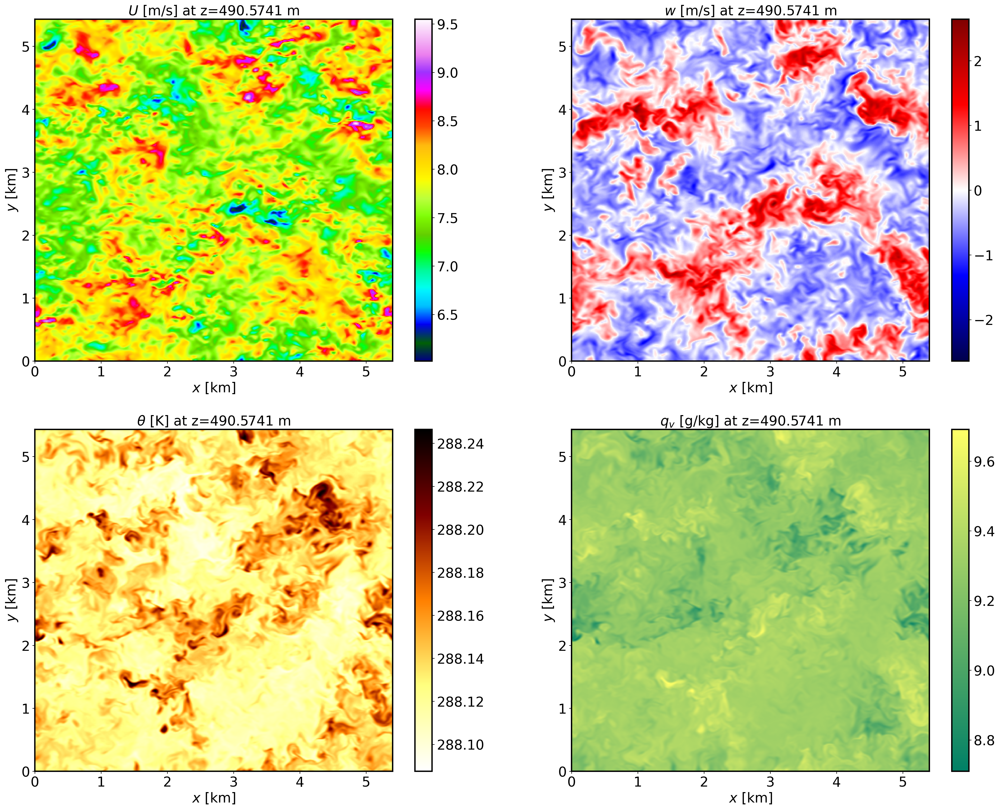
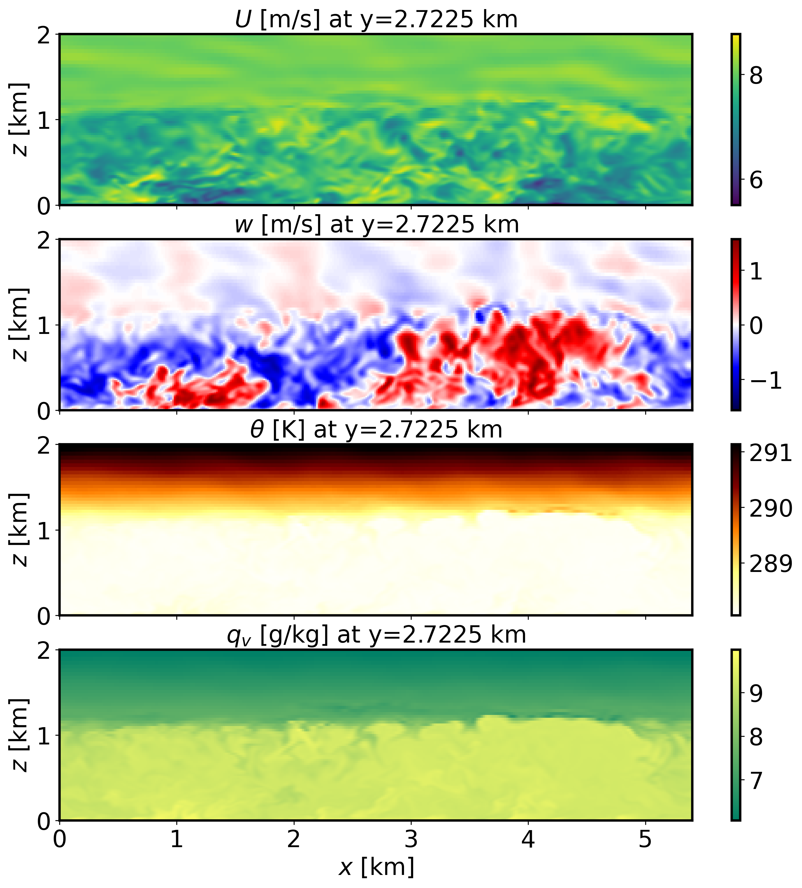
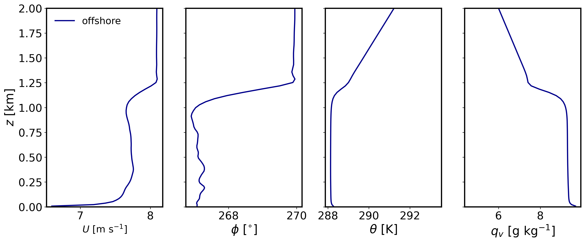
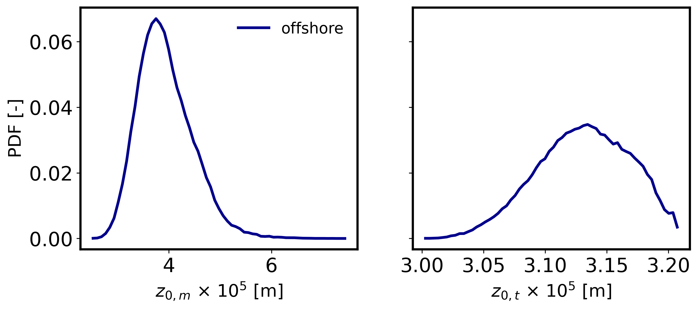
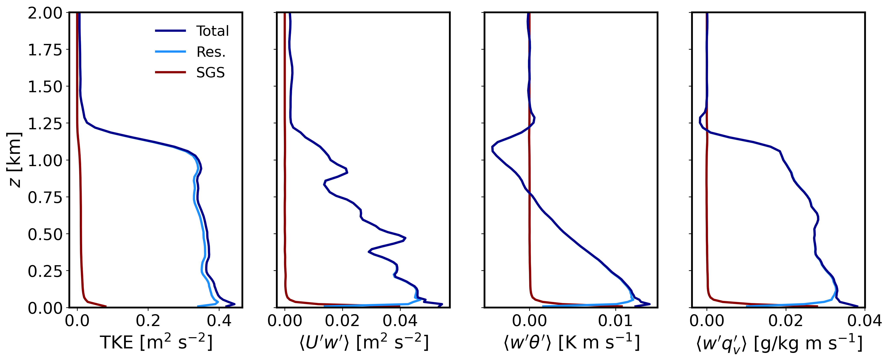

2.6. Offshore boundary layer
2.6.1. Background
This is an offshore boundary layer scenario at the location of the FINO1 platform in the North Sea. The case is similar to that described in Munoz-Esparza et al. (2014a). This tutorial cases introduces the use of an offshore roughness length formulation. Additional surface forcings arise from a temperature warming rate and a static skin water vapor content that is larger than initial atmospheric condition at the ground by \(4\) g/kg.
2.6.2. Input parameters
Number of grid points: \([N_x,N_y,N_z]=[360,362,90]\)
Isotropic grid spacings in the horizontal directions: \([\Delta x,\Delta y]=[15,15]\) m, vertical grid is \(\Delta z=15\) m at the surface and stretched with verticalDeformFactor \(=0.50\)
Domain size: \([5.40 \times 5.43 \times 2.70]\) km
Model time step: \(0.04\) s
Advection scheme: 5th-order upwind
Time scheme: 3rd-order Runge Kutta
Geostrophic wind: \([U_g,V_g]=[8.1,0]\) m/s
Latitude: \(54.0145^{\circ}\) N
Surface potential temperature: \(288\) K
Potential temperature profile:
Surface warming rate: \(0.5\) K/h
Surface roughness length: Drennan (2003) parameterization
Rayleigh damping layer: uppermost \(400\) m of the domain
Initial perturbations: \(\pm 0.50\) K
Depth of perturbations: \(825\) m
Top boundary condition: free slip
Lateral boundary conditions: periodic
Time period: \(4\) h
2.6.3. Execute FastEddy
Note that this example requires customization of the initial condition file. A Jupyter notebook is provided in tutorial/notebooks/Offshore_Prep.ipynb that assigns the SeaMask 2d array to 1.0 (required to activate the offshore parameterization), imposes a linear profile initial condition for water vapor mixing ratio and an initial time-invariant skin water vapor mixing ratio content. In addition, the initial condition for dry hydrostatic desnity is readjusted to account for the presence of water vapor.
Create a working directory to run the FastEddy tutorials and change to that directory.
Create a Example06_OFFSHORE subdirectory and change to that directory.
The FastEddy code will write its output to an output subdirectory. Create an output directory, if one does not already exist.
Run FastEddy using the input parameters file tutorials/examples/Example06_OFFSHORE.in first for 1 timestep to create the FE_OFFSHORE.0 file. To run for 1 timestep, the following values need to be changed in the tutorials/examples/Example06_OFFSHORE.in file:
Change
frqOutputfrom 7500 to 1Change
Ntfrom 360000 to 1Change
NtBatchfrom 7500 to 1
The run of the Jupyter notebook in the next step will write a FE_OFFSHORE.0 file in an initial subdirectory. Create an initial directory, if one does not already exist.
Then, run the Jupyter notebook to produce a modified initial conditions file as describe in the first paragraph. Modify
path_basein the tutorial/notebooks/Offshore_Prep.ipynb file, specifying the path to the Example06_OFFSHORE directory. Be sure to include the trailing slash/.Then, run FastEddy for the \(4\) h of the simulation by changing
frqOutput,Nt, andNtBatchback to their original values, and modifyinPathandinFilein tutorials/example/Example06_OFFSHORE.in, specifying the path and the filename, respectively, for the newly written initial condition FE_OFFSHORE.0 file in the initial directory. Be sure to include the trailing slash/in theinPath.
See Running under NSF NCAR HPC for instructions on how to build and run FastEddy on NSF NCAR’s High Performance Computing machines.
2.6.4. Visualize the output
Open the Jupyter notebook entitled MAKE_FE_TUTORIAL_PLOTS.ipynb.
Under the “Define parameters” section, modify
path_base, specifying the full path to the Example06_OFFSHORE subdirectory, but don’t include Example06_OFFSHORE subdirectory. Be sure to include a trailing slash/).Under the “Define parameters” section, modify
caseto set its value tooffshore.Run the Jupyter notebook.
The resulting XY cross section png plots will be placed in a FIGS subdirectory of the Example06_OFFSHORE directory.
XY-plane views of instantaneous horizontal wind, vertical velocity, potential temperature and water vapor mixing ratio at \(t=4\) h (FE_OFFSHORE.360000):
{kind=link}

XZ-plane views of instantaneous horizontal wind, vertical velocity, potential temperature and water vapor mixing ratio at \(t=4\) h (FE_OFFSHORE.360000):
{kind=link}

Mean (domain horizontal average) vertical profiles of state variables at \(t=7\) h (FE_OFFSHORE.360000):
{kind=link}

Probability distributions of roghness length for momentum and heat at \(t=4\) h (FE_OFFSHORE.360000):
{kind=link}

Horizontally-averaged vertical profiles of turbulence quantities at \(t=3-4\) h [perturbations are computed at each time instance from horizontal-slab means, then averaged horitontally and over the previous 1-hour mean]:
{kind=link}

2.6.5. Analyze the output
How do the surface roughness lengths in this offshore environemnt compare in terms of magnitude and spatial distribution to the neutral ABL tutorial case?
What is the impact of offshore roughness length of momentum on mechanical turbulence production compared to typical conditions over land?
Using the vertical profile plots, explain the ABL stratification and what surface forcings are contributing to create buoyancy effects and of which magnitude and sign?